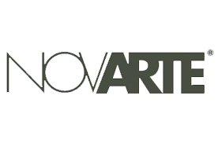
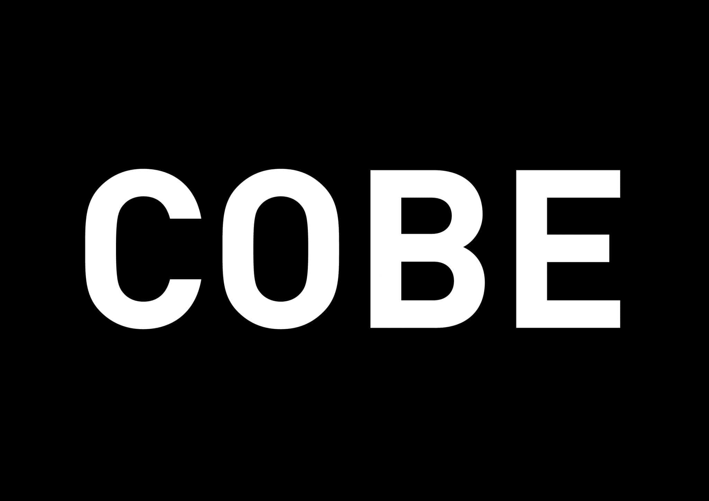

Architect at ARTECO-Architecture Enginnering Consulting s.r.l of arch. Calcagni, arch. Cenna, arch.
Zarbato and arch. Milani, Verona

Architect at Research and Development Departament of NOVARTE s.r.lof Luca Sciamanna, Teramo

Architect at COBE Berlín, prof. dr. V.M. Carlow and prof. arch. Sigurd Larsen, Berlin Germany
Architect co-founder atSML group, of arch. Buono, arch.Camam and arch Federici, Europe
Internship at STRATO, of arch. Fraschetti and arch. Tattolo, via Andrea Sacchi, Roma
EDUCATION
English Course at Kaplan English School. New York City-SoHo, USA.
Master's Degree in "Architecture" at Rome University "Sapienza", School of Architecture, no/no, supervisor prof. arch. Fabrizio Tucci,
co-supervisor arch Giovanni Dibenedetto.
European Workshop"SURF_AS:Strategie Urbane Reti Forme.Abitare
Sostenible" Rome University "Sapienza. School of Architecture, width
Ecole Nationale Superieure d'Architecture Malaquais - Paris.
Bachelor of Science Degree in Architecture at Rome University
"Sapienza",School of Architecture, no/no,cum laude, supervisor prof.
arch. P.V Dell'Aira, co-supervisor arch. Giovanni Dibenedetto.
High School Diploma at Liceo Scientifico Temistocle Calzecchi Onesti, Fermo,82/100.
DIDACTIC EXPERIENCE AND PRIZE
Essays of the case study inside an anthology of examples titled "The
'twin house': a formative theme" by prof. P.V. Dell'Aira,"Architecttura e
Progetto-DiAP" Departament-Rome University "Sapienza"
SML + MDD Michela Esposito: Second Prize at the Food Design
"iceCREAm"Italian National Contest.
Assistant Professor of Architectural Design Laboratory 1. of the prof.
P.V Dell'Aira at the University "La Sapienza" of Rome.